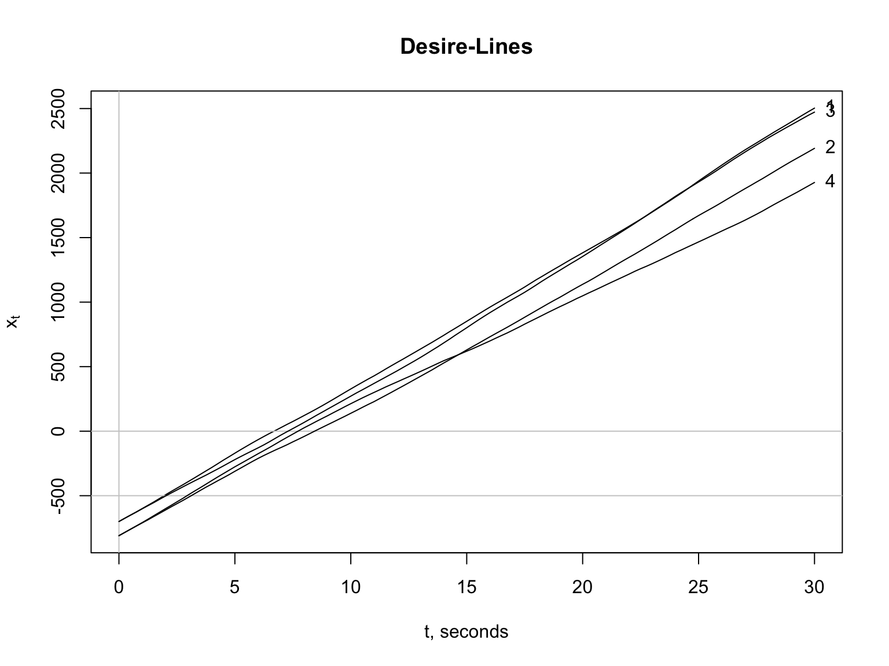
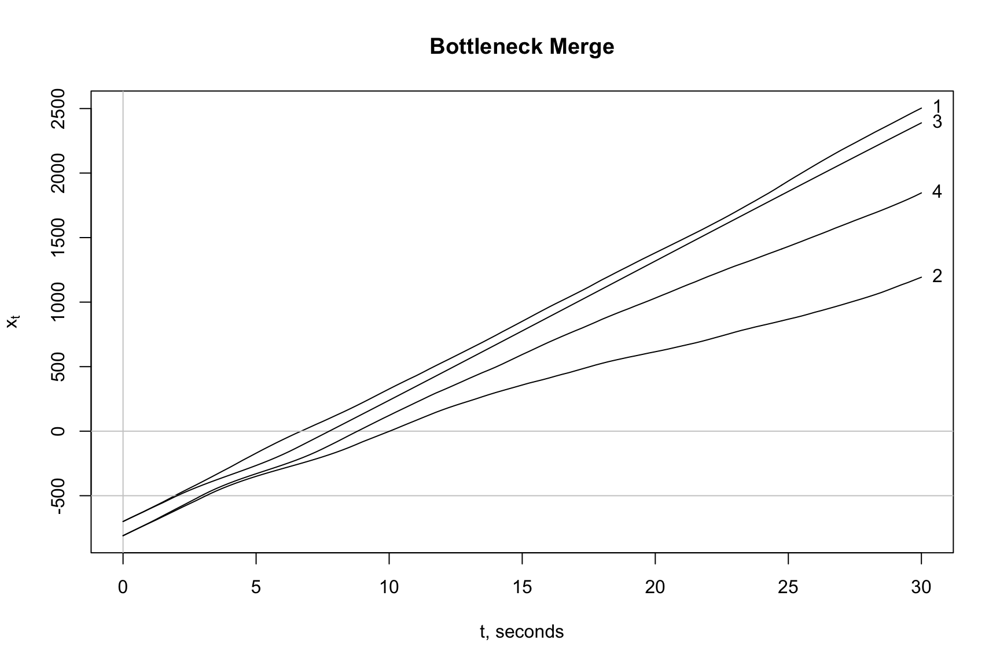

Traffic Breakdown Part 5
Ignoring traffic noise is an ideal scenario and totally unrealistic. There is little doubt that the root cause traffic breakdown must consider traffic noise.
There are other factors that must be considered. Take for example, the safe headway \(h_{safe}(u, l_{eff})\) assumption. Drivers will not only self optimize but will be risk averse, they seek comfort. We are hard pressed to find a real world situation where two drivers will maintain a safe headway of \(h_{safe}\) = 67 feet as shown in the \(y-x\) plots \(x > 0\), downstream of the bottleneck. Tailgaters may not abide by this rule of keeping three cars lengths between themselves and the vehicle in front of them. Drivers of the lead vehicle will feel more comfortable with \(h_{safe}\) = 106 feet, more than six car lengths between the lead and following vehicles, as shown for \(x \leq -500\) feet.
This critique of the deterministic model and subsequent model developments brings into question what are the conditions are necessary for a decision-making driver to take action. For \(-500 \le x \le 0\) feet, it was assumed that the safe headway \(h_{safe}(u, l_{eff})\) assumption was always sufficient. A decision-making driver, who is not comfortable with the rule, has the option to stop and trigger a breakdown event. The challenge is to develop a stochastic model of the form:
Traffic Breakdown Part 6
To trigger a traffic breakdown and to initiate queue formation, a roadway system must be under stress. Even though we are investigating a simple roadway geometry, the system is under stress: (1) the traffic density is high, \(k\) = 50 vpm, (2) vehicles are forced to merge because of a lane drop, (2) traffic volatility is high, \(\sigma\) = 11 mph = 16 fps, for an average speed \(u\) = 41 mph = 60 fps, (3) vehicles are closely spaced thus limiting drivers’ options to maneuver and finally, (4) drivers desire to self optimize work against them putting the system under added stress. In the following simulation, two of three vehicles are traveling side-by-side before they enter the merge zone of a bottleneck. To avoid a crash, one driver must yield and decelerate. Given this combination of factors, traffic breakdown is expected. The chance of a breakdown is \(\pi(k = 50)\) = 0.8. Once breakdown is triggered, a queue forms and grows steadily over time.
Let us look at the action of the three drivers, who we identify by vehicle number. Their individual action over time is important. Initially at time \(t_0\) = 0 seconds, the distance between vehicles 0 and 1, which is directly behind, is \(h_0\) = 105 feet, a space headway estimated as \(h_0 = 1/k\). \(h_0\) is almost twice the safe headway \(h_{safe}\) for an average speed of \(u\) = 41 mph = 60 fps at this density. The positions of the three vehicles at \(t_0\) = 0 seconds is shown under the table column heading \(x_0\). The table shows there is no conflict between vehicles 0 and 1 and indicates that vehicle 0 can move freely downstream through the merge zone, \(-500 < x \le 0\). Since the driver has no conflicts, we call it a zipper merge. The slope of the \(t-x\) trajectory appears to be steady. However, the table shows the driver to be increasing his or her speed. At times \(t_{start}\) = 6 seconds and \(t_{end}\) = 14.5 seconds, the vehicle has accelerated from \(u_{start}\) = 64.7 fps and \(u_{end}\) = 74.4 fps. Times \(t_{start}\) and \(t_{end}\) are the times when the vehicle enters and exits the merge zone.
| Vehicle | \(x_{0}\) | Conflict | Resolution | \(t_{start}\) | \(t_{end}\) | \(u_{start}\) | \(u_{end}\) | \(x_{start}\) | \(x_{end}\) |
|---|---|---|---|---|---|---|---|---|---|
| 0 | -895 | No | Zipper | 6 | 14.5 | 64.7 | 74.4 | -515 | -27.3 |
| 1 | -1000 | Yes | Leader | 8.5 | 16 | 62.2 | 53.0 | -501 | -26.4 |
| 2 | -1000 | Yes | 8 | 16.5 | 81.9 | 56.9 | -508 | -28.9 | |
| 2 | -1000 | Yield | Follower | 8 | 16 | 81.9 | 53.0 | -508 | -91.0 |
The situation for drivers of vehicle 1 and 2 is different. There is no conflict upstream of the bottleneck for \(-1000 < x < -500\) feet. The trajectories over this range overlap but there is no conflict because the vehicles are traveling in separate lanes. After \(x\) = -500 feet, a conflict exists. Vehicle 1 becomes the leader of this pair of vehicles. Its trajectory is similar to vehicle 0 in the sense that the driver travels forward unimpeded. Note its speeds through the merge zone are \(u_{start}\) = 62.2 fps and \(u_{end}\) = 53.0 fps, respectively.
Vehicle 2, the follower, decelerates from a speed of \(u_{start}\) = 81.9 fps to \(u_{end}\) = 53.0 fps. The latter speed of 53.0 fps is exactly the same speed as vehicle 1 at \(t_{end}\) = 16 seconds. The distance between the two vehicles at this time is the safe headway distance \(h_{safe}\) = 64.6 feet. The red and blue solid circles draw attention to this fact. The red \(t-x\) trajectory shows the curve to cross the blue trajectory for vehicle 1 at two places. At the first crossing at around \(x\) = -250 feet, the following \(y-x\) shows the center-line of the two vehicles to be separated by 6 feet. The slopes of the \(t-x\) trajectories for vehicles 1 and 2 suggest that vehicle 1 is accelerating and vehicle 2 is decelerating at this point in time.
The red trajectory shows vehicle 2 to cross the trajectories of vehicles 0 and 1. This does not mean the vehicle is crashing into these vehicles. Its meaning is quite the opposite. It shows that once a vehicle passes the bottleneck \(x\) = 0 that drivers tend to accelerate and seek higher speeds. In this instance, the driver of vehicle 2 is passing vehicles 0 and 1 in the opposing lane that is free of traffic.
To keep the discussion as simple as possible, we investigated three vehicles. Since their trajectories satisfy the safe headway conditions, all three drivers are driving safely. Now, imagine that vehicle 3 and 4 enter the simulation. Given that the two self-optimizing drivers will maintain a safe head-ways between themselves and the vehicles in front them as we described for car-following. These drivers also have the option to maintain a \(1/k\) headway described above. In either case, vehicles 3 and 4 are suspected to driving side-by-side especially as they approach \(x = -500\) feet. Using the \(1/k\) headway estimation method, they will be located at \(x = -1105\) feet at \(t = 0\) and the two drivers of vehicles 3 and 4 will be in a position to decide which one take on the role of leader or follower. In other words, we can repeat the analyses as above for vehicles 1 and 2. The net result is the system will remained in a stress condition. The queue will grow and speeds will continue to decline in magnitude. Eventually, the speeds will decline to values to values that we define as congested. We experience the transition, \(X = 0 \rightarrow X = 1\).
Traffic Breakdown 7
Now, we will introduce another vehicle to our simulation. Why restrict it to four vehicles? Adding more vehicles is no problem but the \(t-x\) trajectories for more than four vehicles becomes different to follow owing to the complexity associated with traffic breakdown. cartools is an educational and research tool. Right now, the emphasis is on education so we want a problem that is easy to follow and at the same time, give a clear-cut explanation of traffic breakdown.
Model Features and Warnings: As we have seen, \(t-x\) trajectories overlap and cross one another. This is permissible in certain situations. We impose car-following restrictions on all vehicles (1) upstream of \(x\) = -500 feet where the roadway has two traffic lanes and (2) downstream of \(x\) = 0 where the roadway has one lane. (3) While no car-following restrictions are imposed in the merge zone, \(t-x\) trajectories are expected to diverge when the \(h_{safe}\) rule is violated.
A reader should be aware that a \(t-x\) trajectory is an imperfect tool and it can be misleading when trajectories overlap. Look at the first two items. They may seem to have counter intuitive explanations. But really, they are not:
Upstream \(t-x\) trajectories may overlap. Why? The vehicles are traveling side-by-side and do not occupy the same space.
Downstream \(t-x\) trajectories may not overlap. Why? Overlapping trajectories suggest that vehicles have crashed. Moreover, we are looking for downstream trajectories are sufficiently far enough apart to assure that the drivers are driving safely.
While these restrictions seem harmless enough, they place an extra burden on the development of stochastic models. Fortunately, we analyze interaction leader and follower pairs, thus the analysis becomes more palliative.
“Desire-Line” Trajectories: At the same time restrictions are placed on traffic operation, we want to allow each driver to be a self optimizer and to seek a path to minimize his or her travel time. To come to grips with this idea, we introduce the notion of a driver “desire-line” trajectory, an ideal scenario for a driver traveling in free-flow or \(X = 0\) state. Accordingly, the \(t-x\) trajectory the driver follow as predicted by the bmfree2 function. This idea will become clearer as we proceed.
Problem Statement: Assume that the traffic entering the bottleneck is operating in a free-flow \(X = 0\) state with traffic densities on lanes 1 and 2 equal to \(k_1\) = \(k_2\) = 25 vpm. Owing to the lane drop, the downstream density will be double, \(k_{downstream}\) = 50 vpm. According to a previous discussion, an average downstream speed of \(u_{downstream}\) = 41 mph is expected. Since \(u_{downstream}\) < \(u^*\) = 50 mph, the definition of a congested state \(X = 1\) is satisfied. We will see if this will happens.
However, remember that being in a congested state using field data is a chance event. \(\pi(k)\) = 0.8 = 80\(\%\) at \(k\) = 50 vpm. Stated another way, downstream vehicles are expected to operate at speeds equal to and greater than 50 mph 20\(\%\) of the time. The upstream and downstream \(\bar{u} \pm \sigma\) are: 68 \(\pm\) 4.4 and 41 \(\pm\) 11 mph, respectively. In other words, we expect a substantial drop in speed and a substantial increase speed volatility measured as a standard deviation when a breakdown occurs.
We also assume that the upstream vehicles are traveling side-by-side in parallel and the condition for a zipper merge is not satisfied. Drivers must adjust their speeds to safely merge. We will investigate this behavior.
Does our stochastic model adequately explain the triggering of a traffic breakdown event? Our investigations begins by evaluating the “desire-line” \(t-x\) trajectories from one simulation shown below. Assigning a different random seed to the algorithm will give an entirely different set of trajectories.

Driver Conflicts: The “desire-line” trajectories shown above have vehicles 1 and 2 traveling in lane 1 and vehicles 3 and 4 traveling in lane 2. As mentioned above, (1) upstream \(t-x\) trajectories may overlap, (2) downstream trajectories can neither cross nor overlap, and (3) merge zone trajectories are expected to diverge when the \(h_{safe}\) rule is violated. Since the downstream trajectories overlap, it is obvious that the drivers must make adjustments to avoid crashing. However, it is not obvious that the \(h_{safe}\) rule is violated in the merge zone. The rule is violated, but why?
Let us investigate driver conflicts by starting with vehicles 1 and 3. The drivers of these vehicles have “desire-line” trajectories that are arguably the same. Both drivers want (desire) to arrive at the same location at time \(t\) = 30 seconds. This is impossible because their downstream trajectories overlap. One driver must yield to avoid a crash. It is not obvious at this point which driver will yield. This will be discussed presently.
Now, let us shift our attention to driver 2 of lane 1, a following vehicle in a car-following situation. Driver 2 is maintaining a safe headway behind vehicle 1. Similarly, driver 4 of lane 2, a following vehicle, is maintaining a safe headway behind vehicle 4.
Like in the previous paragraph, one of the drivers of vehicles 2 and 4 must yield to avoid a downstream crash. The “desire-line” of vehicle 2 shows it driver to be more aggressive than driver 4. Driver 2 wants to pass driver 4. Again, we have a situation where one of these drivers must yield.
Model Predictions: Now, we skip directly to our solution and then critique the solution and the entire approach.
Vehicle 1 becomes the leader followed by vehicles 3, 4 and 2 in that order at time \(t\) = 30 seconds. All driver conflicts are removed and the \(h_{safe}\) rule is imposed on all drivers. It is also interesting to observe that driver 4, who was deemed to be more aggressive than driver 2, winds up last. Before investigating this situation, we focus on our main concern, Does our stochastic model adequately explain the triggering of a traffic breakdown event?

By visual inspection, we can see the slopes of the \(t-x\) trajectories or speeds to be declining for each vehicle that pass through the merge zone and pass point \(x\) = 0. Even though we are observing only four vehicles, we can also see a queue forming. It moves in the upstream direction as expected. So, a cursory test of our model, the plotmerge3 function, suggests the model explains breakdown. Since we are using the Learning Process of Box, Hunter, and Hunter (1978), we subject our model to further testing and offer deeper understanding.
Car Following Effects: The effects of imposing the \(h_{safe}\) rule and the non-linear acceleration model,
for the merge zone, coupled with the random effects of the Brownian motion model, (1) slow vehicles down and (2) affect the order in which vehicles pass through the merge zone. While the \(t-x\) trajectories appear correct, there is a lot going on in this simple example. Obviously, the code must be robust to account for various interactions that drivers must face when merging in dense and volatile traffic.
Regardless on the mathematical rigor, our model must satisfy the test of common sense. So let us pose another question: Do the simulated drivers behave in a manner that is realistic?
Start with drivers 1 and 3. Driver 1 is shown as to be moving through the merge zone unimpeded. Owing the effects of Brownian motion, driver 1 arrives at \(x\) = -500 fractions of a second before driver 3. Therefore, driver 3 yields and slows as shown. That makes sense.
Driver 3 must make quick decisions as a car-follower. Theoretically, driver 3 observes and processes the roadway information presented to him or her. To help us describe the situation as simply as possible, the driver is assumed to subconsciously process the information as summarized in the “desire-lines” trajectories for vehicles 1 and 3. After processing the information, driver 3 knows a crash is inevitable if no changes are made. Driver 3 slows to a speed that equals the speed of vehicle 1 and decelerates in a manner to be a safe distance behind vehicle 1 when it passes through the bottleneck at \(x\) = 0. Again, this makes sense. Driver 3 is risk averse.
The decision-making scheme used by driver 3 required by our mathematical model uses six variables of time, speed and location. They include the time the vehicle arrives at \(x = x_{start}\) = -500 feet or \(t_{start}\) and the time the driver arrives at \(x = x_{end}\) = 0 or \(t_{end}\). The speed at these times are \(u_{start}\) and \(u_{end}\). These variables are used to create the \(t-x\) trajectory shown for vehicle 3 with the xabmerge3 function.
Drivers 2 and 4 at this point in the discussion are both car-followers of vehicle 3. Both arrive at \(x\) = -500 feet safely behind vehicle 3 as determined by the \(h_{safe}\) rule. Vehicle 4 arrives at \(x\) = -500 feet slightly before vehicle 2, therefore, driver 4 takes over as the leader and driver 2 as the follower. It follows the reasoning above, so it makes sense.
Driver 4 must make a decision based on the roadway information presented as a follower of vehicle 3. Like above, driver 4 will use the “desire-line” trajectory for vehicles 3 and 2 and find an unsafe situation and make adjustments. Driver 4 is predicted to follow as shown above. The next step is to analyze the situation for vehicle 2, a follower, where vehicle 4 is the leader. Since the same scheme is used by each seceding driver, there is no need to claim that it is passing our common sense test.
Downstream Traffic Behavior: We stated above that driver of vehicle 4 is aggressive. How can we explain that downstream of the bottleneck at \(x\) = 0 that driver 4 is the least aggressive driver? At this point, our answer relies on car-following effects, vehicle sorting, and vehicle speeds at \(x\) = 0. In other words, upstream conditions of the bottleneck at \(x\) = 0 dictate. Simply stated, the driver is caught in traffic and blocked. Common sense? Yes.
The following forecasts shown below are derived from the same model and inputs including the same random seed as above. The only difference is 10 vehicles are analyzed in lieu of four. In this simulation, the first three vehicles 1, 6 and 2 are not delayed and the following ones are. The speeds in the merge zone of the followers appear to be affected most sharply. Let us see.
Bottleneck Delay: We decided to investigate 10 simulations consisting of 10 vehicles for the situation described above. The results are summarized with a time-series plot of speed averages and standard deviations below.
The average speeds fall below our critical speed of \(u^*\) = 50 mph from about seven seconds from 5 to 12 seconds with an estimated maximum speed drop of 21 mph at \(t\) = 7 seconds.
The speed volatility is substantial over this period. According to predictions, traffic volatility is even higher after 15 seconds, or on the downstream side of the bottleneck.
For the present, we defer questions dealing with queue length and congestion relief. These are tough questions that need more thought and field data.
Stochastic Model Critique: Do the collection of cartools functions adequately explain this behavior? Yes, we think so. Can it be improved? Definitely. Our intention is to have a fluid work platform. Therefore, corrections and refinements to the cartools are expected and suggestions for improvement are welcome.
We understand that further research is needed to better explain downstream traffic behavior. No field data were collected downstream of the bottleneck on I-93, so our driving experiences are used. It is a fact that once drivers pass through a bottleneck that drivers will accelerate and will try to return to a free-flow state. Well, we don’t have this situation. Downstream of the bottleneck, our roadway is confined to one lane and does not expand to two lanes. Regardless, the forecasts from the simulations shown above show this behavior. It passes our common sense test.
For another, the speed drop and high volatility results shown in the Bottleneck Delay plot stem directly mechanisms embedded in the stochastic model or brktrials3 function. We have empirical evidence from I-93 field data that \(\bar{u} \pm \sigma\) equals 41 \(\pm\) 11 mph. This information was not introduced into our model or code. The model forecasts and empirical evidence match. We are looking into ways to show that this result is not a coindence, but a fact.
Conclusions
Traffic noise explains delay and queue formation. High traffic density can be blamed for the loss in performance downstream of \(x > 0\).
Remove noise and all drivers benefit as described above by the zipper merge of Part 3. Does the simulation suggest that expanding the number of lanes downstream of the bottleneck to reduce land traffic density is a good solution? Good question. History shows that it is not a good idea. What can be done? Public transportation is one answer.
The simulation suggests that removing or mitigating traffic noise that the driving world would be a better place. We look at that possibility by looking at Intelligent Transportation Systems (ITS) and the notion of Smart Cities.
References
Box, George E, William G Hunter, and J Stuart Hunter. 1978. Statistics for Experimenters. New York: John Wiley & Sons.